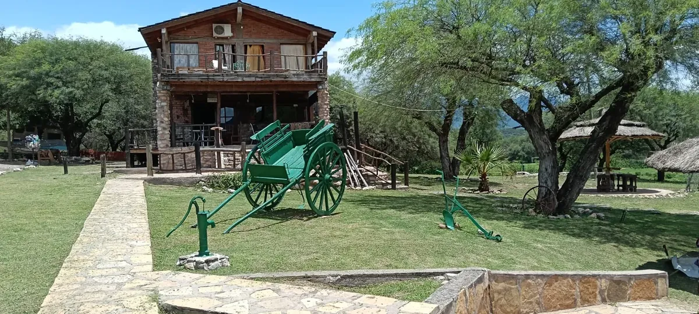
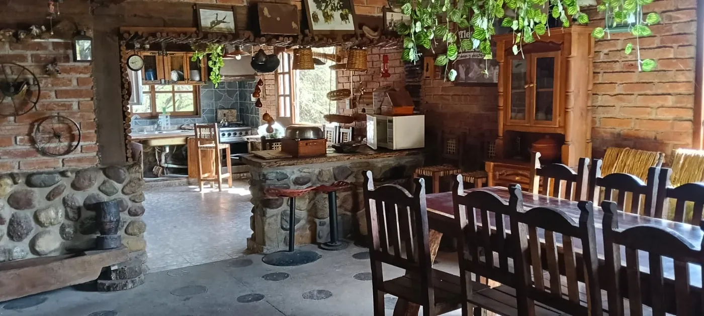
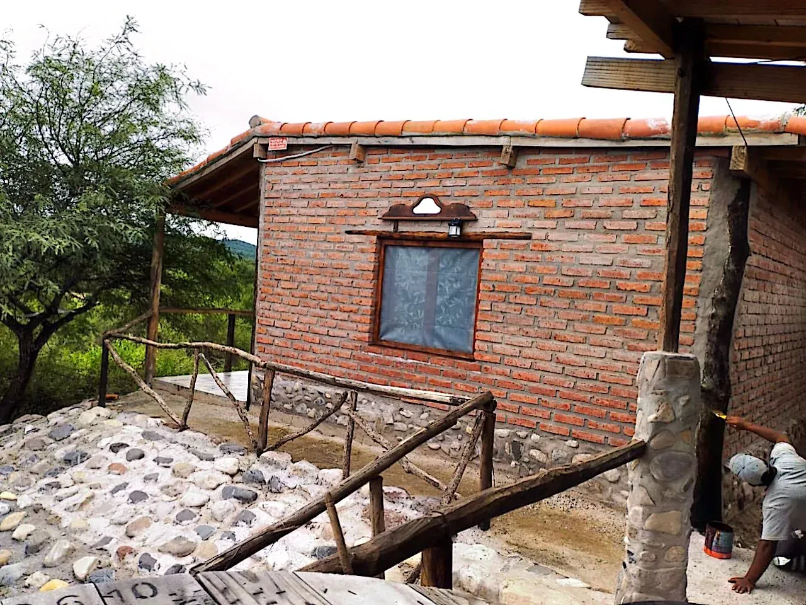
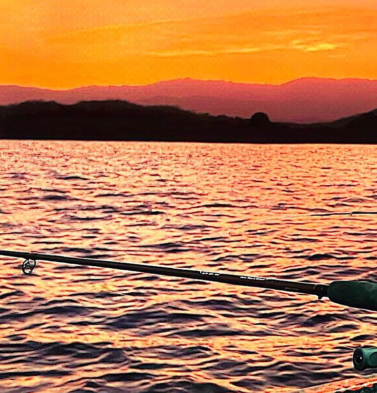

01 ¿Cuánto sale?
Por día y por casa completa: la Casa Grande $250.000, la Cabaña $120.000 y la Cabaña chica $50.000. Cada persona por encima del máximo de la casa suma $20.000 por día. Precios vigentes hasta el 31 de agosto de 2026.

Rancho Quilla son tres casas independientes en un predio a la orilla del dique: una para doce, una para seis y una para dos. Alquilás la casa entera: nunca una habitación, nunca un espacio compartido con desconocidos.
La construcción es bien de campo, sin decorado: ladrillo a la vista, muros de piedra bola, madera de algarrobo, hogar a leña. El quincho tiene una mesa larga con sillas de respaldo alto a los dos lados, y las paredes están cubiertas de lo que se fue juntando en años — cuadros, ruedas de carro, canastos, un sombrero colgado de un clavo.
Afuera hay pasto, senderos de laja, quinchos de paja y un sulky pintado de verde. La pileta da al agua. El muelle está atado a un tronco. En el predio viven caseros todo el año.


Tres casas de tamaños distintos, cada una independiente de las otras. El precio es por día y por casa completa, no por persona.
Precios vigentes hasta el 31 de agosto de 2026
| Casa | Por día |
|---|---|
| La Casa Grande Máximo 12 personas | $250.000 por día |
| La Cabaña Máximo 6 personas | $120.000 por día |
| La Cabaña chica Para 2 personas | $50.000 por día |
| Persona excedente Por encima del máximo de cada casa | $20.000 por persona y por día |
Los máximos son máximos. Si son más personas que el máximo de la casa, cada una suma $20.000 por día. Consultá antes de reservar para que te confirmemos disponibilidad y el total.
Cada casa tiene lo suyo, así que está anotado por separado. Si algo no figura acá, no está.
Fotos del lugar tal como está, tomadas con el teléfono. Están separadas por casa, así sabés qué estás mirando. Tocá cualquiera para verla grande.
El predio está sobre el dique, a minutos de Los Mayuatos —la salida de los catamaranes— y antes de llegar a Coronel Moldes. Es un destino de descanso, pesca y navegación, a distancia de escapada desde la ciudad de Salta.
Cada huésped lleva sus toallas y su papel higiénico. Es por higiene. La ropa de cama sí está incluida.
Por día y por casa completa: la Casa Grande $250.000, la Cabaña $120.000 y la Cabaña chica $50.000. Cada persona por encima del máximo de la casa suma $20.000 por día. Precios vigentes hasta el 31 de agosto de 2026.
Sí. Cada casa es independiente de las otras y se alquila entera: nunca vas a compartir tu casa con desconocidos.
12 en la Casa Grande, 6 en la Cabaña y 2 en la Cabaña chica. Si son más, se puede: cada persona de más abona el adicional por día.
Toallas y papel higiénico. Nada más: la ropa de cama está incluida y la cocina viene equipada con heladera, freezer y utensilios.
Sí, las mascotas son bienvenidas. Avisá cuando consultes para coordinar una estadía cómoda y segura.
Se ingresa a las 12:00 del mediodía y se sale a las 11:00 del día siguiente. Eso cuenta como un día.
También aceptamos dólares, a la mejor cotización. En La Cabaña chica se pide además un depósito de garantía de $20.000, que se devuelve 48 horas después de que termina la estadía.
No respondemos por las inclemencias del tiempo, ni por los cortes de agua o de luz que provoque la empresa distribuidora. Y cada persona es responsable de sus cuidados al entrar a la pileta y al dique.

Con esos dos datos te confirmamos qué casa entra, si está libre y cuánto sale en total. Se responde por WhatsApp.
+54 9 3874 83-0580